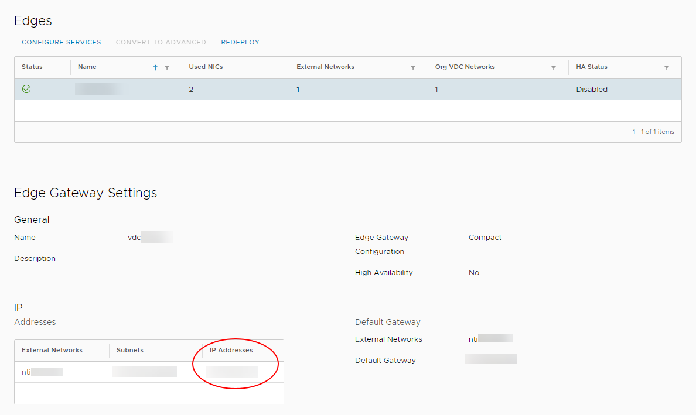
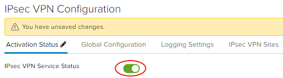
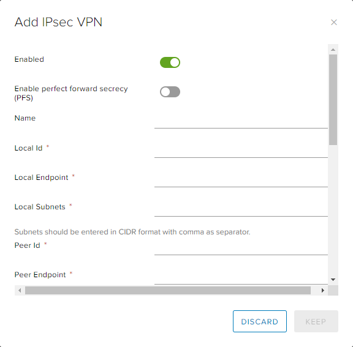

How to configure IPsec VPN
Overview
vCloud Director supports the following types of site-to-site VPN:
Another edge gateway in the same organisation
An edge gateway in another organisation (UKCloud or another vCloud service provider)
A remote network offering IPsec VPN endpoint capability
Depending on the type of connection required, you'll need to complete IP addressing for both ends, together with a shared secret, and indicate which VDC networks are allowed to connect to the VPN link.
Before you begin
Before you start configuring IPsec VPN settings, you'll need to make a note of the IP address of your edge gateway to use as your tunnel endpoint address:
In the vCloud Director Virtual Datacenters dashboard, select the VDC that contains the edge gateway you want to configure.
In the left navigation panel, click Edges.

On the Edges page, select the edge that you want to configure.
In the Edge Gateway Settings section, in the IP Addresses table, make a note of the IP address in the IP Addresses column.

Configuring edge gateway IPsec VPN settings
On the Edges page, select the edge that you want to configure and click Configure Services.

Select the VPN tab, then the IPsec VPN tab.

On the Activation Status tab, enable the IPsec VPN Service Status option.

Select the IPsec VPN Sites tab.
Click the + icon.
In the Add IPsec VPN dialog box, enable the Enabled option.
Complete the configuration as follows:
Field Description Enable perfect forward secrecy (PFS) Select this if your on-premises/remote site has that capability. Name Local Id Local Endpoint The external IP of your edge gateway (refer to the first steps of this procedure for more information). Local Subnets Enter the organisation networks that can access the VPN (separate multiple local subnets with commas). Peer Id Peer Endpoint The external IP of your remote site or on-premises firewall or edge where VPN is being set up. Peer Subnets This is the subnet on your on-premises network that you want to make accessible from your UKCloud VDC. For example, if your on-premises networks sit inside the 10.20.0.0/16range, you could enter10.20.0.0/16here or limit your entry to a smaller subnet of that, for example10.20.0.0/25.Encryption Algorithm Select the most secure protocol that is supported by your on-premises gateway. Authentication Select the authentication method that is supported by your on-premises gateway. If you want to use certificates, then you need to configure those first on the Certificates tab. Pre-Shared Key The shared secret used to authenticate and encrypt the connection. It must be an alphanumeric string between 32 and 128 characters that includes at least one uppercase letter, one lowercase letter and one number. This must be the same on both sites. Diffie-Hellmann Group We recommend setting this to DH14 or higher if your on-premises environment can support it. 
When you're done, click Keep to create the edge end of the VPN tunnel then click Save changes.
Creating the second VPN gateway
You now need to create the endpoint of the VPN tunnel. If this is a different VDC (in the Elevated security domain) or vOrg, go through the steps described above again to create the tunnel. When you've done that, you can change your firewall settings and validate the connection (see below).
If you're connecting to an external data centre, you'll need to set up the tunnel on that premises.
Creating an external data centre VPN gateway
Although we can't provide specific instructions on setting up an external data centre gateway to connect to the edge gateway, we've provided information about some configuration requirements below.
IKE Phase 1 and Phase 2
IKE is a standard method for arranging secure, authenticated communications.
Phase 1 parameters
Phase 1 sets up mutual authentication of the peers, negotiates cryptographic parameters, and creates session keys. The supported Phase 1 parameters are:
Main mode
AES/AES256/AES-GCM (user configurable)
Diffie-Hellman Group
Pre-shared secret (user configurable)
SA lifetime of 28800 seconds (eight hours) with no kbytes rekeying
ISAKMP aggressive mode disabled
Phase 2 parameters
IKE Phase 2 negotiates an IPSec tunnel by creating keying material for the IPSec tunnel to use (either by using the IKE phase 1 keys as a base or by performing a new key exchange). The supported IKE Phase 2 parameters are:
AES/AES256/AES-GCM (Will match the Phase 1 setting)
ESP tunnel mode
Diffie-Hellman Group
Perfect forward secrecy for rekeying (only if it was turned on in both endpoints)
SA lifetime of 3600 seconds (one hour) with no kbytes rekeying
Selectors for all IP protocols, all ports, between the two networks, using IPv4 subnets
Configuring the edge gateway firewall
When the VPN tunnel is up and running, you'll need to create firewall rules on the edge gateway for any traffic passing over the tunnel. For how to do this, see How to create firewall rules.
Key points to note:
You need to create a firewall rule for both directions, that is, from data centre to VDC and from VDC to data centre.
For data centre to VDC, set:
Source as the source IP range for your external VDC/data centre network
Destination as the destination IP range for your VDC network
For VDC to data centre, set:
Source as the source IP range for your VDC network
Destination as the destination IP range for your data centre/VDC network
Configuring the external data centre gateway firewall
When the VPN tunnel is up and running, you may need to create firewall rules and routes on your on-premises gateway or other internal firewall for traffic passing over the tunnel. This is outside of the scope of this article and will depend on your specific premises network configuration.
Validating the tunnel
When you've configured both ends of the IPSec tunnel, the connection should start without any issues.
To verify the tunnel status in vCloud Director:
On the Edges page, select the edge that you want to configure and click Configure Services.
Select the Statistics tab and then the IPsec VPN tab.
For each configured tunnel, if you can see a tick, the tunnel is up and running and operational. If any other status is shown, you'll need to review your configuration and any firewall rules.
Note
It can take up to two minutes after the tunnel is established to show that the VPN connection is active.
You should now be able to send traffic via the VPN.
Note
Logs from the IPsec VPN cannot currently be used to aid fault finding.
Next steps
In this article you've learned how to configure IPsec VPN. For other edge gateway configuration tasks, see:
Feedback
If you find a problem with this article, click Improve this Doc to make the change yourself or raise an issue in GitHub. If you have an idea for how we could improve any of our services, send an email to feedback@ukcloud.com.